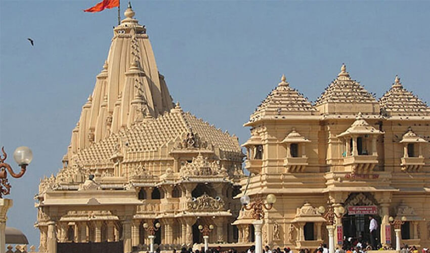

Dwarkadhish Temple
Lord Sri Krishna temple in Gomati coast is holy, which temple is known as DWARKADHISH Temple. According to the opinion of the Department of Archaeology, This temple is 1200 years old. Logically estimated one great-grandson of Lord Sri Krishna Vajranabhe Earlier, around 1400 BCE samudrama dubhi surviving remnant of the house of umbrellas established. The main temple at Dwarka, situated on Gomti creek, is known as jagat mandir (universal shrine) or trilok sundar (the most beautiful in all the three worlds). Originally believed to be built by Vajranabh, the great grandson of Lord Krishna, more than 2500 years ago, it is a glorious structure seeming to rise from the waters of the Arabian Sea. Its exquisitely carved shikhar, reaching 43 m high and the huge flag made from 52 yards of cloth, can be seen from as far away as 10 km. The grandeur of the temple is enhanced by the flight of 56 steps leading to the rear side of the edifice on the side of the river Gomti. The temple is built of soft limestone and consists of a sanctum, vestibule and a rectangular hall with porches on three sides. There are two gateways: swarga dwar (gate to the heavens), where pilgrims enter, and moksha dwar (gate to liberation), where pilgrims exit.
